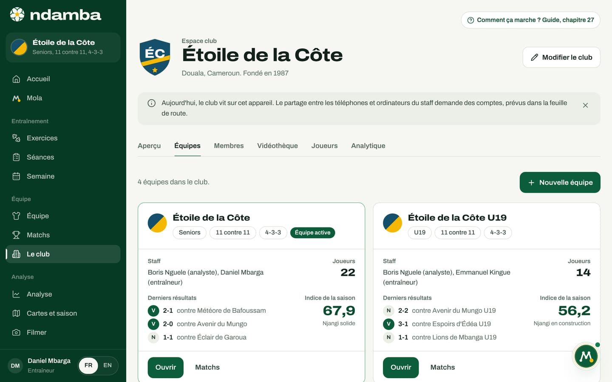
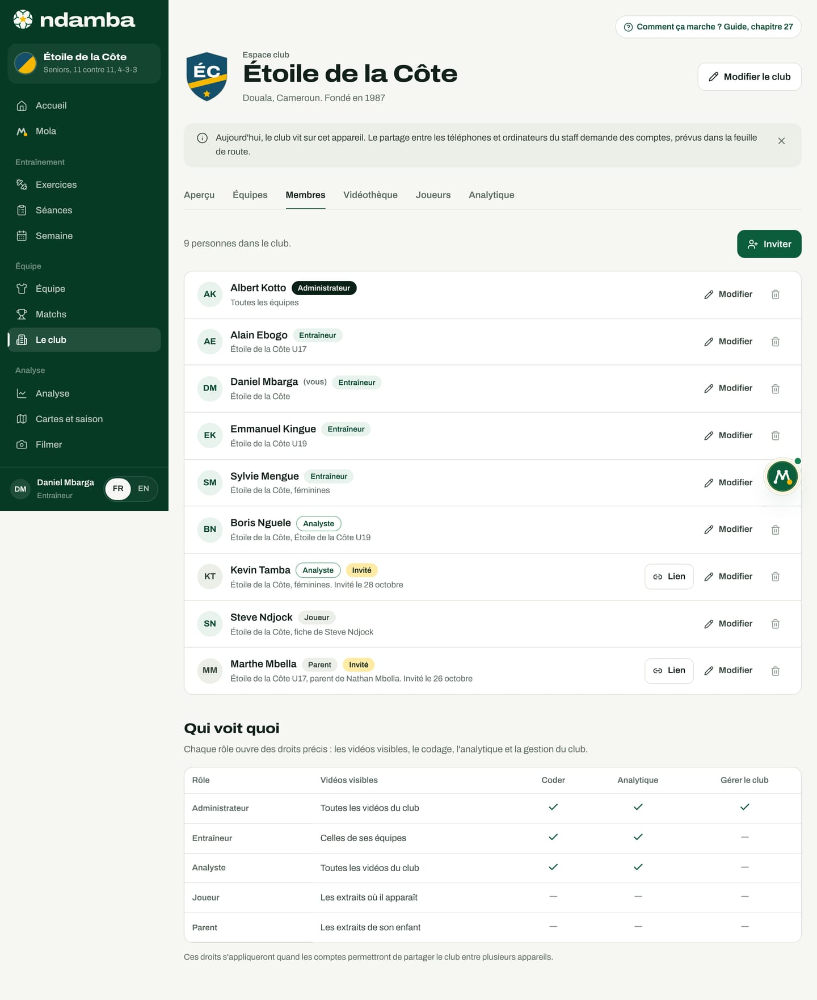
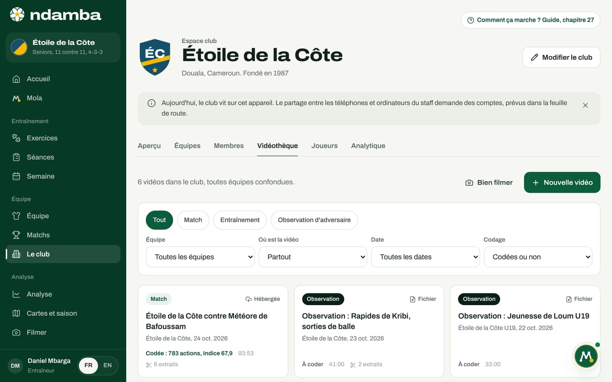
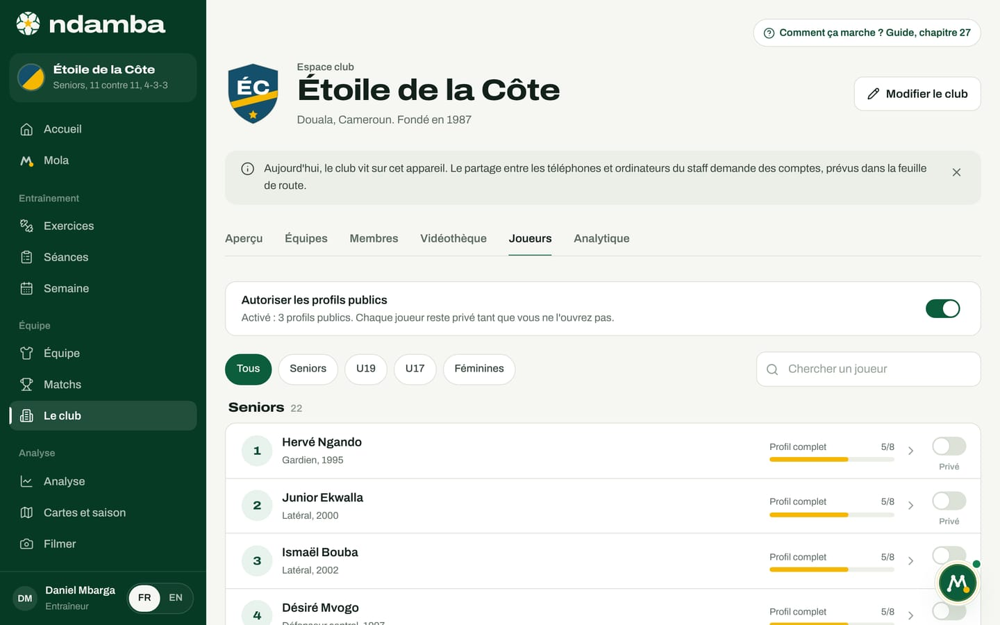
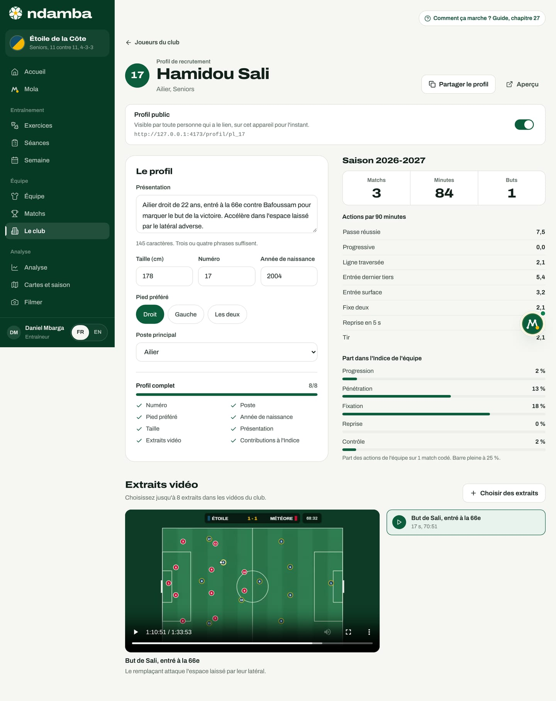
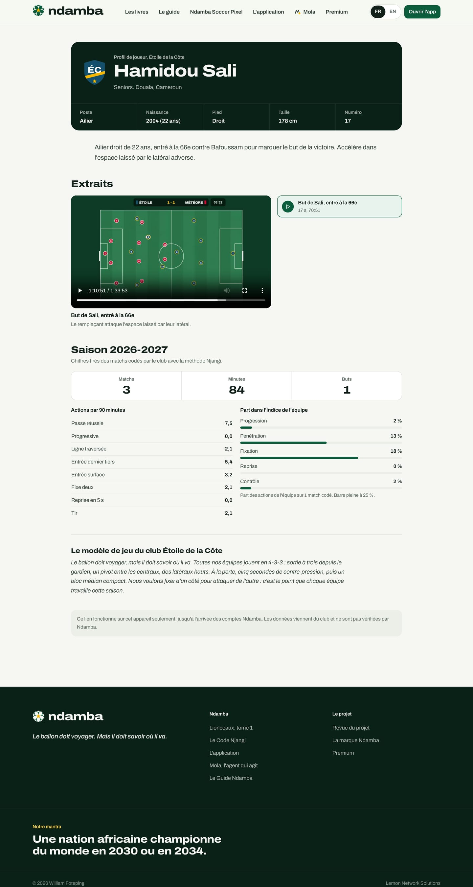
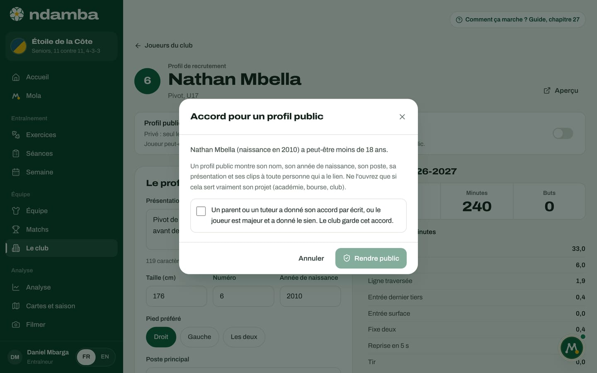
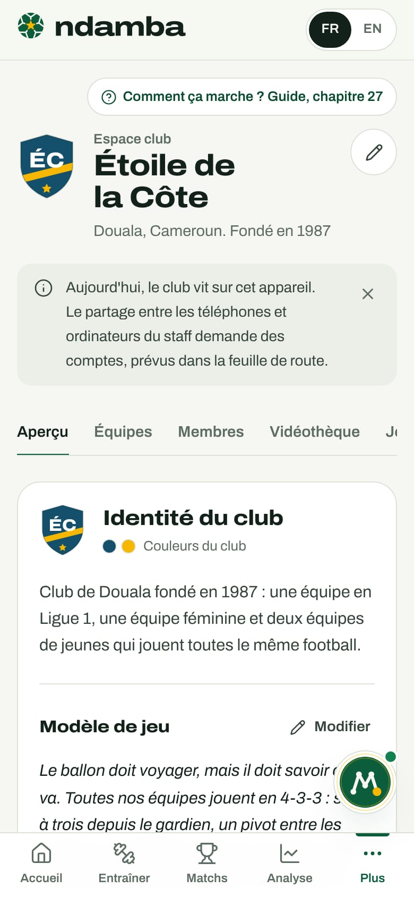

Le club : équipes, membres, vidéothèque, recrutement
L’espace club rassemble toutes les équipes autour d’un même modèle de jeu. Ses six onglets (Aperçu, Équipes, Membres, Vidéothèque, Joueurs, Analytique), les rôles et leurs droits, les invitations que vous envoyez vous-même, les profils de recrutement et leur page publique, la formule Club, et la limite d’aujourd’hui : tout vit sur l’appareil du club.
14 min de lecture
Un club africain, ce n’est presque jamais une seule équipe : l’équipe première, des équipes de jeunes, souvent une équipe féminine, chacune avec son entraîneur et ses vidéos éparpillées dans des téléphones. Chaque catégorie finit par jouer un football différent, et un joueur qui monte des U17 aux seniors doit tout réapprendre. L’espace club existe pour l’inverse. Il réunit toutes les équipes, le staff, les vidéos et les profils des joueurs autour d’un seul texte, le modèle de jeu du club, et d’une seule mesure, l’Indice Njangi. C’est, à l’échelle d’un club, la continuité que ce guide défend à l’échelle d’un pays (chapitre 22).
Ce chapitre suit l’espace club de la démo club pro : Étoile de la Côte, à Douala, avec ses quatre équipes, ses neuf membres et ses six vidéos.
Ouvrir l’espace club
Dans le menu, groupe Équipe, touchez Le club. Sur téléphone, il est dans le panneau Plus. L’adresse est /app/club.
Si aucun club n’existe encore sur cet appareil, la page affiche Réunissez vos équipes dans un club : « Le club rassemble toutes vos équipes, votre staff, vos vidéos et les profils de vos joueurs, avec un même modèle de jeu. » Deux boutons : Créer le club, et Charger le club de démo quand la démo club pro est ouverte.
La fenêtre Créer le club demande :
- Nom du club (obligatoire), Ville, Pays et Année de fondation.
- Couleur principale et Couleur secondaire : le blason se dessine tout seul avec ces couleurs et les initiales du club, et une case propose de les donner aux équipes déjà créées.
- Présentation : qui vous êtes, en deux phrases.
- Modèle de jeu : « Comment toutes vos équipes jouent avec le ballon, sans le ballon et dans les transitions. » Ce texte est partagé par toutes les équipes ; il apparaît dans l’analyse et sur les profils publics.
L’en-tête montre ensuite le blason, le nom, la ville et l’année de fondation, et Modifier le club. Une note sur fond sable rappelle la règle du moment : « Aujourd’hui, le club vit sur cet appareil. Le partage entre les téléphones et ordinateurs du staff demande des comptes, prévus dans la feuille de route. » La croix la ferme pour de bon sur cet appareil.
Six onglets suivent : Aperçu, Équipes, Membres, Vidéothèque, Joueurs et Analytique, chacun avec son adresse (/app/club/equipes, /app/club/membres, et ainsi de suite).
Aperçu : le club d’un coup d’œil

Identité du club et Couleurs du club reprennent le blason et la présentation. Dans la démo : « Club de Douala fondé en 1987 : une équipe en Ligue 1, une équipe féminine et deux équipes de jeunes qui jouent toutes le même football. »
Modèle de jeu, avec son lien Modifier, est le cœur de la page. Celui de la démo dit, entre autres : « Toutes nos équipes jouent en 4‑3-3 : sortie à trois depuis le gardien, un pivot entre les centraux, des latéraux hauts. À la perte, cinq secondes de contre-pression, puis un bloc médian compact. » Sous le texte : « Le même texte pour toutes les équipes, des jeunes aux seniors. »
Quatre compteurs suivent :
| Compteur | Démo | Ce qu’il compte |
|---|---|---|
| Équipes | 4, « 63 joueurs au total » | Toutes les équipes de l’appareil |
| Membres | 9, « dont 2 invitations en attente » | Le staff, les joueurs et les parents ajoutés au club |
| Vidéos | 6, « 2 codées » | Toutes les vidéos, toutes équipes confondues |
| Matchs codés | 10, « Saison 2026‑2027 » | Les matchs joués cette saison qui ont des codes |
Une ligne rappelle la formule : « Votre formule actuelle : Coach Pro. L’espace club complet fait partie de la formule Club, 49 $US par mois. Rien n’est bloqué pendant la démonstration. », avec le lien Voir la formule Club.
Enfin, Ce dont chaque équipe a besoin donne une ligne par équipe, avec son Indice de la saison et la prochaine chose à faire : ajouter l’effectif si l’équipe n’a pas de joueurs, « Coder un premier match, en direct ou sur la vidéo, pour lancer l’Indice de la saison. » si rien n’est codé, ou son point faible. Dans la démo, les quatre équipes ont le même : « Point faible de la saison : Fixation (8,3 sur 20). À travailler dans la semaine. » pour les seniors, 7,0 pour les U19, 4,5 pour les U17 et 9,0 pour les féminines. C’est exactement ce que le modèle du club annonce : « Nous voulons fixer d’un côté pour attaquer de l’autre : c’est le point que chaque équipe travaille cette saison. » Le lien Toutes les équipes ouvre l’onglet suivant.
Équipes : chaque catégorie, une carte


L’onglet commence par « 4 équipes dans le club. » et le bouton Nouvelle équipe. Chaque carte donne la catégorie, le format (11 contre 11), le système, la mention Équipe active sur l’équipe ouverte partout dans l’application, puis :
- Staff : les membres rattachés à l’équipe avec leur rôle, et « invité » si l’invitation n’est pas encore acceptée ;
- Joueurs : la taille de l’effectif ;
- Derniers résultats : les trois derniers matchs avec une pastille V, N ou D, le score et l’adversaire ;
- Indice de la saison et sa bande, calculés sur les codes additionnés de tous les matchs codés de la saison, jamais sur une moyenne.
| Équipe | Joueurs | Indice de la saison | Bande |
|---|---|---|---|
| Étoile de la Côte (seniors) | 22 | 67,9 | Njangi solide |
| Étoile de la Côte U19 | 14 | 56,2 | Njangi en construction |
| Étoile de la Côte U17 | 13 | 41,8 | Intention fragile |
| Étoile de la Côte, féminines | 14 | 62,5 | Njangi en construction |
Changer d’équipe depuis le club. Le bouton Ouvrir rend l’équipe active et ouvre sa page Équipe ; Matchs la rend active et ouvre ses matchs. C’est le même geste que Rendre active dans les Réglages ou la plaque de l’équipe en haut du menu (chapitre 6) : toute l’application bascule sur l’équipe choisie, l’accueil, les séances, la semaine et l’analyse compris. Un directeur technique passe ainsi des U17 aux seniors en un geste.
Créer une équipe. Nouvelle équipe (« Aux couleurs du club, avec le même modèle de jeu. ») ouvre une fenêtre courte : Nom de l’équipe, Catégorie, Format et Système, puis Créer l’équipe. L’équipe prend les couleurs du club.
Membres : qui fait partie du club


L’onglet annonce « 9 personnes dans le club. » et propose Inviter. Chaque ligne donne les initiales, le nom (« (vous) » pour votre propre profil), un badge de rôle, le badge Invité tant que la personne n’a pas rejoint, ses équipes, et pour un joueur ou un parent la fiche liée (« fiche de Steve Ndjock », « parent de Nathan Mbella »). À droite : Lien pour une invitation en attente, Modifier, et la corbeille. Retirer quelqu’un demande confirmation, Retirer ce membre ? : « Ses vidéos et ses données de joueur restent en place. »
Dans la démo : un administrateur, un entraîneur par équipe, deux analystes dont un invité (Kevin Tamba), un joueur (Steve Ndjock) et une mère invitée (Marthe Mbella, parent de Nathan Mbella en U17).
Les rôles et leurs droits
Sous la liste, le tableau Qui voit quoi : « Chaque rôle ouvre des droits précis : les vidéos visibles, le codage, l’analytique et la gestion du club. »
| Rôle | Vidéos visibles | Coder | Analytique | Gérer le club |
|---|---|---|---|---|
| Administrateur | Toutes les vidéos du club | Oui | Oui | Oui |
| Entraîneur | Celles de ses équipes | Oui | Oui | Non |
| Analyste | Toutes les vidéos du club | Oui | Oui | Non |
| Joueur | Les extraits où il apparaît | Non | Non | Non |
| Parent | Les extraits de son enfant | Non | Non | Non |
La phrase sous le tableau compte autant que le tableau : « Ces droits s’appliqueront quand les comptes permettront de partager le club entre plusieurs appareils. » Aujourd’hui, ce tableau décrit les règles du club ; il ne verrouille encore rien, puisque tout le club vit sur un seul appareil.
Inviter quelqu’un
- Touchez Inviter. La fenêtre Inviter dans le club s’ouvre.
- Saisissez Nom et prénom (obligatoire) et, si vous le voulez, l’E-mail, qui sert seulement à préparer le message.
- Choisissez le Rôle. Une phrase explique chacun : « Code et analyse les vidéos de ses équipes. » pour un entraîneur, « Voit les extraits de son enfant. » pour un parent.
- Cochez les Équipes concernées (un administrateur les a toutes). Pour un joueur, choisissez sa Fiche du joueur ; pour un parent, Son enfant. Choisir plus tard est possible.
- Touchez Créer l’invitation.
La fenêtre Invitation pour suit, avec le Lien d’invitation de la forme /rejoindre-club/ suivi d’un code, et trois boutons : Copier le lien, WhatsApp et E-mail. La règle est écrite en tête : « Envoyez ce lien vous-même, par WhatsApp, par e-mail ou par SMS. Ndamba n’envoie rien à votre place. » Le message prêt à partir dit par exemple : « Bonjour Kevin, je t’invite à rejoindre Étoile de la Côte sur Ndamba comme analyste. Ouvre ce lien sur ton téléphone : … »
Ce que fait ce lien aujourd’hui, la fenêtre le dit sans détour : « Pour l’instant, le lien ouvre Ndamba sur le téléphone de la personne. Le rattachement automatique au club arrivera avec les comptes : d’ici là, marquez le membre comme actif quand il a rejoint. » Sur l’appareil du club, la page /rejoindre-club/ affiche Invitation au club Étoile de la Côte, pour qui, avec quel rôle, et Ouvrir l’espace du club ; ailleurs, Invitation introuvable sur cet appareil. Quand la personne a rejoint, ouvrez Modifier sur sa ligne et passez son Statut à Actif. Le bouton Lien retrouve le message d’une invitation en attente.
Vidéothèque : toutes les vidéos du club


Le studio vidéo (chapitre 29) travaille une vidéo à la fois ; la vidéothèque les montre toutes. « 6 vidéos dans le club, toutes équipes confondues. » En haut, Bien filmer ouvre la page Filmer vos matchs (chapitre 31) et Nouvelle vidéo la fenêtre d’ajout.
Les pastilles trient par type : Tout, Match, Entraînement, Observation d’adversaire. Quatre filtres affinent :
- Équipe : Toutes les équipes, une équipe, ou Sans équipe ;
- Où est la vidéo : Partout, Lien (YouTube ou Facebook), Fichier (sur l’appareil) ou Hébergée (envoyée sur Ndamba, chapitre 31) ;
- Date : Toutes les dates, 30 derniers jours ou la saison ;
- Codage : Codées ou non, Codées, À coder.
Quand rien ne correspond, Effacer les filtres remet tout à zéro. Chaque carte porte le type, la source, le titre, l’équipe et la date, l’état du codage (« Codée : 783 actions, Indice 67,9 » ou À coder), la durée et le nombre d’extraits ; toute la carte ouvre le studio. La démo mélange les cas : un match hébergé et codé, deux observations d’adversaires, une séance des U17, un match des U19 codé et un match des féminines encore à coder.
Joueurs : les profils de recrutement
Un jeune joueur talentueux de Bafoussam ou de Garoua a rarement une vidéo à montrer et jamais de chiffres. L’onglet Joueurs donne à chaque joueur du club un profil de recrutement : une fiche sans photo obligatoire, avec ses extraits vidéo et ses chiffres de la saison tirés des matchs codés, à montrer à un recruteur, une académie ou une université.


En haut, l’interrupteur Autoriser les profils publics décide pour tout le club. Activé : « Activé : 3 profils publics. Chaque joueur reste privé tant que vous ne l’ouvrez pas. » Désactivé : « Désactivé : aucun profil n’est visible, même ceux marqués publics. » Il faut donc deux accords pour qu’un profil soit visible : celui du club et celui du profil.
Dessous, des pastilles par équipe (Tous, Seniors, U19, U17, Féminines) et Chercher un joueur. Chaque ligne donne le numéro, le nom, le poste, l’année de naissance, le compteur Profil complet (par exemple 5/8) et Public ou Privé. Un profil complet compte huit éléments, et pas de photo : Numéro, Poste, Pied préféré, Année de naissance, Taille, Présentation, Extraits vidéo et Contributions à l’Indice.
Le profil d’un joueur
Touchez un joueur : son profil s’ouvre à l’adresse /app/club/joueurs/ suivie de son identifiant. Dans la démo, ouvrez le numéro 17, Hamidou Sali, ailier des seniors, entré à la 66e minute contre Météore de Bafoussam pour marquer le but de la victoire.


Le haut de page porte Partager le profil, présent quand le profil est public, qui copie le lien (« Lien copié »), et Aperçu, qui ouvre la page publique dans un nouvel onglet. Puis :
- Profil public : l’interrupteur du joueur. Activé, « Visible par toute personne qui a le lien, sur cet appareil pour l’instant. », avec l’adresse /profil/ du joueur. Si le club n’autorise pas les profils publics, la carte le dit et propose Changer ce réglage. Pour un joueur qui a peut-être moins de 18 ans (né il y a 18 ans ou moins), la carte prévient : « l’accord d’un parent ou d’un tuteur sera demandé avant de rendre le profil public », puis affiche la date de l’accord une fois noté.
- Le profil : Présentation (« Son jeu, ses qualités, ce qu’il cherche (académie, bourse, club). » ; trois ou quatre phrases suffisent), Taille (cm), Numéro, Année de naissance, Pied préféré (Droit, Gauche, Les deux) et Poste principal. Chaque changement s’enregistre seul : « Enregistré ».
- Profil complet : les huit éléments, chacun fait ou à compléter.
- Saison : Matchs, Minutes et Buts (3, 84 et 1 pour Hamidou Sali), puis Actions par 90 minutes pour huit actions codées (passe réussie, progressive, ligne traversée, entrée dans le dernier tiers, entrée dans la surface, fixe deux, reprise en 5 s, tir), et Part dans l’Indice de l’équipe : la part des actions de l’équipe qui viennent de ce joueur, sous-indice par sous-indice (18 % de la Fixation pour lui, sur un match codé). La barre est pleine à 25 %.
- Extraits vidéo : jusqu’à huit clips choisis dans les vidéos du club avec Choisir des extraits. La liste montre d’abord les clips où le joueur est marqué (« Avec Hamidou Sali »), puis les Autres extraits du club. Les clips se créent dans le studio vidéo (chapitre 29).
Les chiffres viennent des actions codées et attribuées à ce joueur sur la vidéo (chapitre 29) : un joueur dont personne n’a codé les actions a des minutes et des buts, mais pas de part dans l’Indice.
La page publique
L’adresse /profil/ d’un joueur ouvre une page du site, sans menu de l’application : le blason, « Profil de joueur, Étoile de la Côte », le nom, l’équipe et la ville, le poste, la naissance (« 2004 (22 ans) »), le pied, la taille, le numéro, la présentation, les Extraits à regarder avec Revoir l’extrait, la saison, et Le modèle de jeu du club. Elle se termine par une phrase honnête : « Ce lien fonctionne sur cet appareil seulement, jusqu’à l’arrivée des comptes Ndamba. Les données viennent du club et ne sont pas vérifiées par Ndamba. »


Un extrait se lit sur cette page si sa vidéo est hébergée ou sur YouTube. Un extrait d’une vidéo Facebook s’ouvre sur Facebook, avec les minutes de début et de fin ; un extrait d’un fichier gardé sur l’appareil du club porte la mention « sur l’appareil du club » et ne se lit pas ailleurs. Si le profil n’est pas public, ou s’il n’existe pas sur l’appareil, la page affiche Ce profil n’est pas public.


Analytique : le club en chiffres
L’onglet Analytique compare les équipes. Son titre, « Le club en chiffres, saison 2026‑2027 », est suivi de deux boutons : Ouvrir le studio d’analyse, qui mène à la page Cartes et saison (chapitre 28), et Rapports de match, qui ouvre la page Analyse.
Indice de la saison par équipe trace une barre sur 100 par équipe, avec des traits aux paliers 35, 50, 65 et 80, la bande et le nombre de matchs codés. Les cinq sous-indices les met côte à côte, sur 20, avec en rouge le point faible de chaque équipe :
| Équipe | Progression | Pénétration | Fixation | Reprise | Contrôle |
|---|---|---|---|---|---|
| Seniors | 13,4 | 14,3 | 8,3 | 14,1 | 17,8 |
| U19 | 13,0 | 11,1 | 7,0 | 11,8 | 13,3 |
| U17 | 10,8 | 8,1 | 4,5 | 8,9 | 9,5 |
| Féminines | 13,1 | 13,1 | 9,0 | 11,9 | 15,4 |
Enfin, Point faible commun cherche le sous-indice le plus bas en moyenne : « En moyenne, les équipes du club sont à 7,2 sur 20 en fixation. », avec quatre exercices du Code Njangi qui s’ouvrent d’un geste : R02 (Rondo Avi Ramon), S04 (Le dribble njangi), P07 (Attirer pour libérer) et F04 (Fixer et renverser). Une seule consigne de travail, des U17 à l’équipe première.
Sur téléphone


Sur téléphone, Modifier le club devient un bouton crayon et la rangée des onglets défile ; le reste tient en une colonne.
La formule Club et les limites d’aujourd’hui
L’espace club complet appartient à la formule Club et académie, proposée à 49 $US par mois (environ 29 400 FCFA), qui comprend aussi tout Coach Pro et les équipes illimitées (chapitre 24). Les paiements ne sont pas encore branchés : l’activation est une démonstration, et rien n’est bloqué pendant la démonstration.
Ce qu’il faut savoir avant de s’appuyer sur l’espace club :
- Tout vit sur l’appareil du club. Un autre téléphone ouvre un espace vide ; pour garder ou transmettre le travail, exportez une sauvegarde depuis Réglages (chapitre 6).
- Les invitations ne rattachent personne : c’est vous qui marquez le membre Actif.
- Les droits sont écrits, pas encore appliqués : le tableau Qui voit quoi s’appliquera avec les comptes.
- Les liens de profil public ne marchent que sur l’appareil du club.
Les comptes, la synchronisation entre les appareils du staff et le partage des profils sont le premier chantier de la feuille de route (chapitre 26).